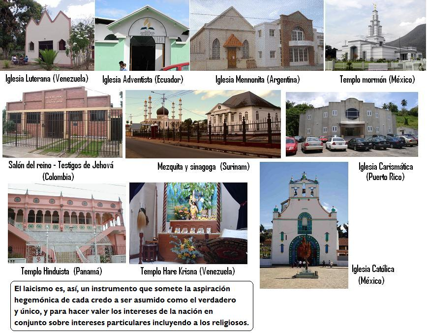
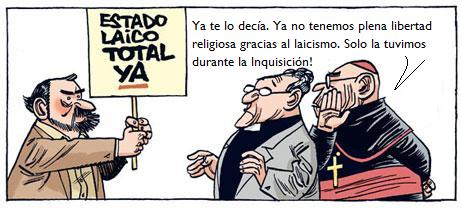

Un punto vital de cualquier Constitución política es la definición del carácter del Estado en el cual la sociedad se compromete a vivir. Dentro de ello, en los actuales momentos, llama la atención la resistencia a lograr la declaratoria de Estado laico, frente a lo cual se crea un fuerte debate en el que no faltan los absurdos de pretender que se trata de un ataque a todos los creyentes.
El laicismo, por el contrario, llama a una postura universalista de respeto al pensamiento de cada quien y, particularmente, de su creencia religiosa o del hecho de no tener ninguna. La igualdad de los ciudadanos independientemente de su postura frente al fenómeno religioso, es parte indisoluble de la igualdad ante la ley y de un Estado de Derecho en el cual la legislación está por encima de los intereses particulares.
El Estado Laico implica además la autonomía del Estado, la independencia entre la ley civil y las normas religiosas o filosóficas particulares, por lo que el laicismo es parte de la soberanía del país. Caso contrario, nos ponemos por debajo de las decisiones de un organismo distinto a los elegidos en votación universal como es el caso de los organismos que dirigen de cualquier culto particular, muchas veces de carácter extranjero, como puede ser el caso del país del Vaticano.
Una falsedad mantenida es que el laicismo es una imposición. Absurdo, pues permite por el contrario la libertad de conciencia y de cultos, no los impide ni pone uno de ellos por encima de otros sino que los garantiza, por supuesto siempre y cuando no atenten a los derechos humanos y a las leyes penales, pues no se puede justificar asesinatos o pedofilia como si se tratase de un asunto de fe. Así, toda fe religiosa y filosófica, incluyendo las ateas, agnósticas y otras, tendrán la misma posibilidad de expresar su pensamiento, de practicar sus ritos, si los tuvieren, y de sentirse en plena igualdad de condiciones con las demás.
El creyente de un credo, y en el Ecuador están registrados más de 200, no sentirá la amenaza de que se le quiera imponer otra religión, pero tampoco podrá imponer la propia. El laicismo asegura la existencia de todos en la casa común, sin que nadie se sienta aislado o segregado y para ello se determina la separación entre el Estado y las organizaciones religiosas, en donde una iglesia (mayoritaria o minoritaria, eso no importa) no determine las acciones del Estado y donde el Estado no interfiera en las acciones de las agrupaciones religiosas.
Pero en el Ecuador hay centenares de miles de compatriotas que se sienten relegados, desde el momento mismo en que se volvió a invocar a dios en la Constitución de la nefasta constituyente de Oswaldo Hurtado. ¿Cuál dios es el citado? ¿El de los pueblos indígenas que adoraban al sol hasta que a sangre y fuego se les impuso el catolicismo? ¿El de los ecuatorianos que profesan el judaísmo o el hinduismo? ¿el del mayoritario catolicismo bajo la orientación de la teología de la liberación o el de los católicos ligados a la historia del fascismo y agrupados en el Opus Dei? ¿Y los ateos y agnósticos, quedan fuera del amparo de esa Constitución? Una invocación de ese tipo es de por sí un acto excluyente contra todos los que no se sientan plenamente representados en ella y la Constitución se entiende que es para todos y todas, sin exclusión de ninguna especie.
Pero el problema es mayor y ha sido históricamente discriminatorio, tal y como lo señalaron representantes de distintas iglesias cristianas en abril del año pasado (2007) al visitar a la comisión del Conesup que trabajaba una propuesta constitucional. El presidente de la Confraternidad Evangélica, el pastor Nelson Castro, indicó que frente a una Ley de Libertad de Conciencias y de Culto, que le da mayor representación a la Iglesia Católica, las minorías religiosas se han visto afectadas. “No hemos tenido nunca una equidad religiosa”, afirmó el pastor Castro, reclamando que la separación de la Iglesia y del Estado se vea en la práctica o, de lo contrario, que todas las iglesias tengan el mismo derecho a participar en organismos del poder público. Imagínese, por ejemplo, el lector más de 200 representantes religiosos al Consejo Nacional de Educación, donde ahora solo tiene presencia el representante de la educación ofrecida por la iglesia católica (duplicando la presencia de la educación privada frente a uno solo de los educadores fiscales).
El ejemplo anterior demuestra que la única igualdad real se puede dar si el Estado se mantiene defendiendo el interés común de todos y sin distinción, pero no en trampas burocráticas de supuesta igualdad que resultan en la sola presencia de la fe mayoritaria (si es que hay un solo catolicismo, lo que muchos religiosos han puesto en duda). Eso ya se demostró cuando se autorizaron clases de religión en las escuelas fiscales, pues para cumplir las condiciones los miembros de una fe religiosa menos numerosa deberían encerrase en una sola escuela para hacer uso del derecho que estaba al alcance de otros.
La historia del Ecuador está llena de actos de imposición religiosa. En 1830 los indígenas son puestos bajo tutela de los párrocos, para que se acaben los credos originarios; en 1852 la Asamblea Constituyente decretó la expulsión de los jesuitas ante su intromisión en todos los asuntos del Estado y su enorme poder económico; en 1862 se firma un Concordato entre Ecuador y el Vaticano que otorga a los obispos la capacidad de censurar libros y fija que la educación será solo católica; ese Concordato se vuelve ley y se entrega a la Iglesia Católica la potestad de aceptar o no cualquier sociedad u organización en 1886, lo que se ratifica en 1889 en “la Carta negra” de García Moreno; así, hasta 1885 en que el obispo de Portoviejo, Pedro Schumacher, pide a los católicos que luchen con las armas en contra de los revolucionarios alfaristas, que una vez victoriosos declaran en la Constitución de 1906 la separación de la Iglesia y el Estado, en 1908 confiscan los bienes inmuebles del clero e inician la educación laica.
Pero la acción política de los obispos y pastores es constante, recordemos que su perfil de candidato presidencial entre líneas llamaba a sostener los puntos de vista de la derecha. Lo más grave es que pretenden que la moral que ellos dicen defender es la única válida, descalificando en los peores términos a las prácticas sexuales diversas, a los defensores de los derechos sexuales y reproductivos, a los integrantes de otras religiones calificadas indiscriminadamente como sectas o herejías.

Los opuestos al laicismo creen poseer la verdad indiscutible y se sienten con el derecho de imponerla a los demás. Los opuestos al laicismo tienen, por tanto, una inclinación autoritaria que explica que Bush acuda al nombre de Dios para invadir Irak, que Al-qaida también recurra al nombre de Dios para sus actos terroristas o que la cúpula del Vaticano haya pactado con Hitler, al que nunca desmintió cuando decía que mataba a judios en cumplimiento de un mandato bíblico. El debate es, entonces, entre laicismo o autoritarismo. Y todos sabemos que el autoritarismo no es democracia. Y que los creyentes que rechazan el uso político de la religión, por parte de Bush, Hitler, Bucaram Febres Cordero o Noboa, saben bien la necesidad de que su fe sea respetada y no mezclada en los asuntos de la política.
El laico, por el contrario, estará dispuesto a poner todo en la mesa de discusión, menos el derecho a disentir, a pensar diferente, a asumir como derecho personal y privado el derecho a ser parte o no de un credo. El laicismo no impone ni la fe ni la falta de fe, solo garantiza la separación entre una creencia personal y el Estado que nos debe cobijar a todos, con la diversidad que sea.
Uno de los derechos humanos es precisamente el de la libertad de culto. Siendo el Estado el obligado a garantizar la vigencia de los derechos humanos, la única forma de hacerlo es declarándose laico y eso significa neutral y separado de toda fe religiosa, sin apoyar a ninguna ni económicamente ni de otro modo, fortaleciendo la educación laica, renunciando al uso de todo símbolo religioso (recuérdese a presidentes dando las medidas antipopulares con un crucifijo a su espalda), ratificando la separación de las prácticas públicas y privadas, sosteniendo la igualdad ante la ley y evitando los conflictos de origen religioso que se dan cuando hay sentido de imposición de una fe sobre otra.
Una última aclaración es que el laicismo es una propuesta clara, que pone a todos los credos filosóficos y religiosos en la misma condición y la idea de que la ley debe cobijar a todos. Esto no puede expresarse como “Estado Multiconfesional” porque este termina siempre en una suerte de comunidades cerradas, mientras el laicismo abre el diálogo y mutuo respeto.
En resumen, el laicismo es garantía de derechos humanos fundamentales, es condición de la vida democrática, componente de nuestra soberanía y respeto real a las distintas posiciones de pensamiento. Por ello, la nueva Constitución debe expresamente dar ese carácter al Estado ecuatoriano, que respete los derechos y trabaje con una visión integradora para todos y todas, sin ningún tipo de exclusión.
Volver a la sección Sociedad y religión
Comentarios
Comments powered by Disqus